Jesus is in this work, and He has full authority over it. Everything on this wall was prayed over first and built second.
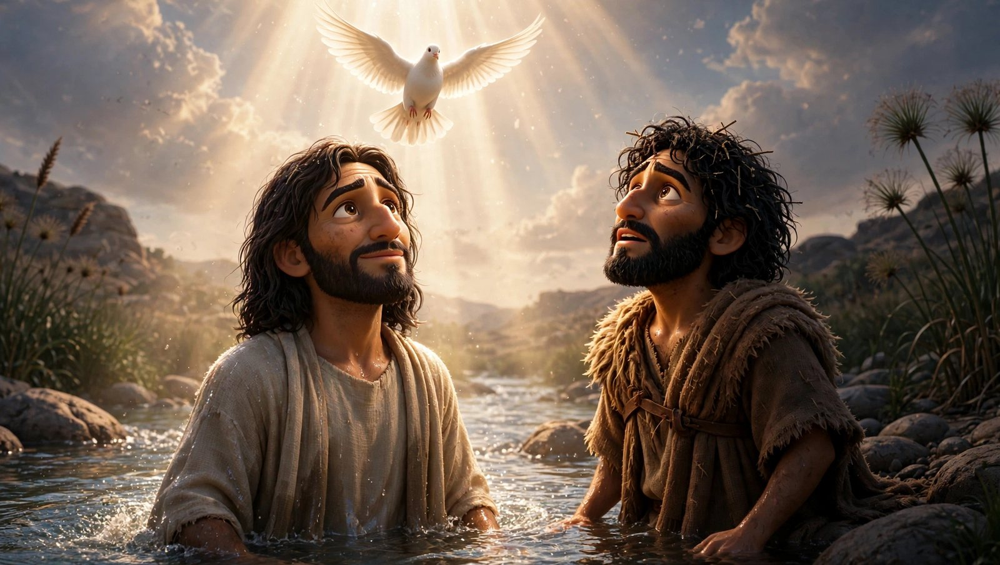
The baptism at the Jordan (Mark 1:9–11) — a frame from the film itself. The dove comes down on Jesus; John, the baptizer, stands beside Him in wonder.
“The beginning of the Good News of Jesus Christ, the Son of God.” Mark 1:1 (WEB)
Most animated films invent a new face for Jesus every time the camera turns. We did the opposite. One cast of characters was drawn once — these faces — and locked, so the same Jesus who is baptized in Mark will walk through John and Genesis after it. Every scene in every film is graded against these sheets before it is allowed to move, and the pictures are brought to life by hand while Grandpa Teddy reads the Word of God word for word. What you see below is that company — the cast of the Gospel films, exactly as they appear on screen. It begins with Mark chapter 1 and grows chapter by chapter: the whole book of Mark, and the Gospels that follow. New faces join this page as their chapters are filmed.
The Cast
Portraits are taken from the locked character sheets and the films’ own frames — never re-invented. Each card tells who they are, their moment in the chapter where they appear, and the Scripture that carries it (World English Bible).
Mark · Chapter 1
The first film — released October 17, 2026.
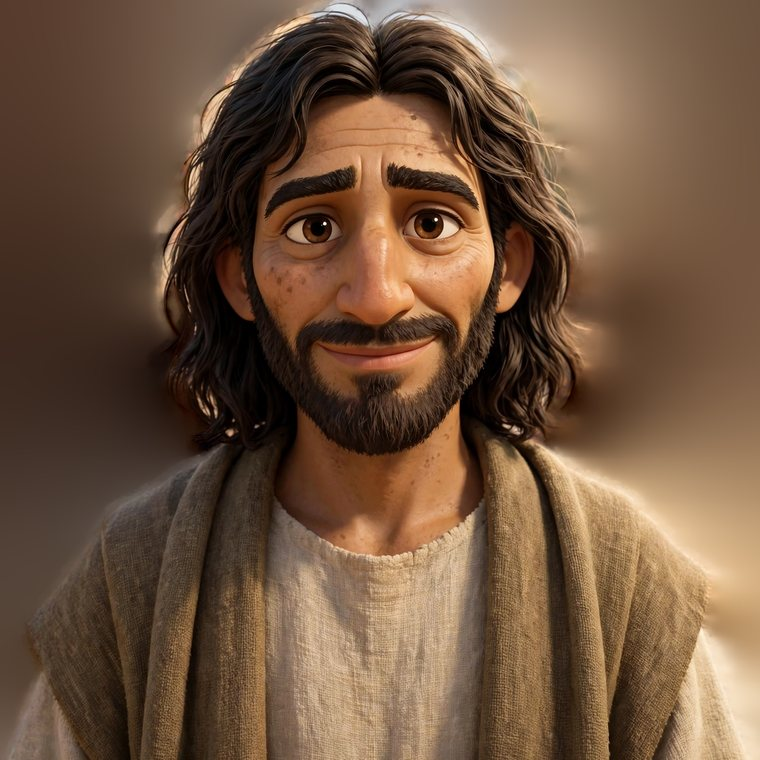
Jesus
The Son of God — teacher and healer, the Servant at the center of Mark’s Gospel.
His momentAt the Jordan he is baptized; the heavens open, the Spirit descends on him like a dove, and the Father speaks.
“You are my beloved Son, in whom I am well pleased.” Mark 1:11
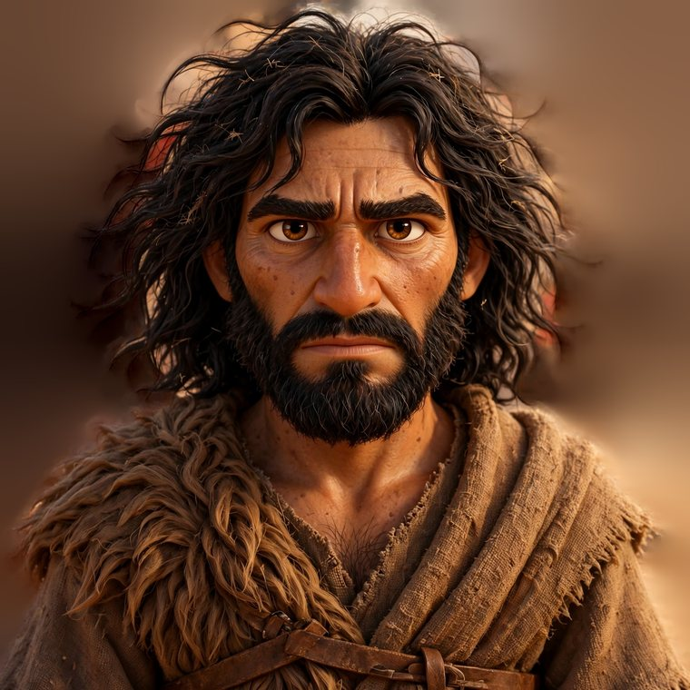
John the Baptist
The voice of one crying in the wilderness, sent to make the way ready for the Lord.
His momentClothed in camel’s hair at the Jordan, he preaches repentance, baptizes Jesus, and points beyond himself.
“I baptized you in water, but he will baptize you in the Holy Spirit.” Mark 1:8
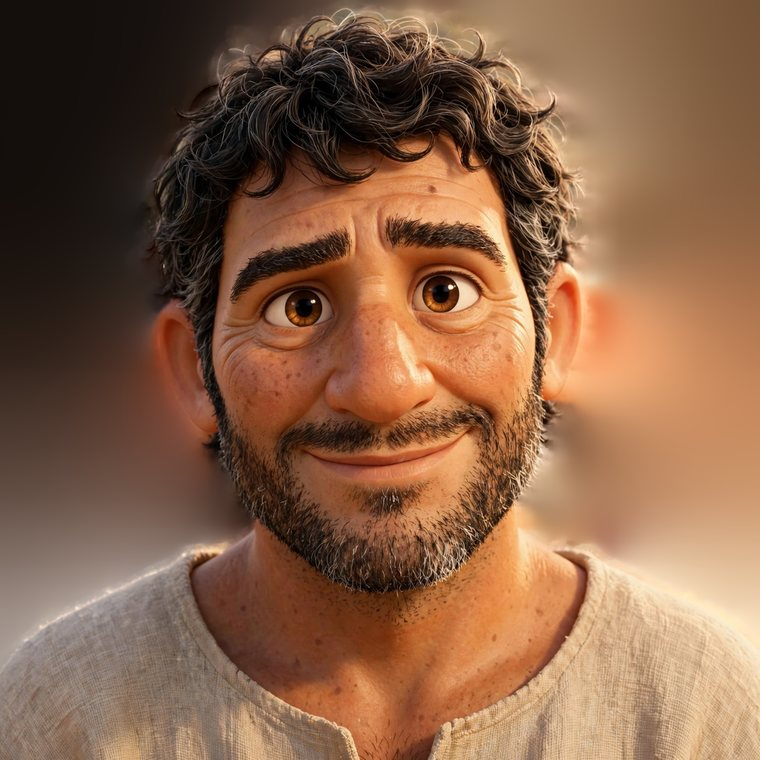
Simon Peter
A Galilean fisherman — bold and quick to follow, the first name whenever the twelve are listed.
His momentCasting his net into the sea when Jesus called — he left his nets and followed, and his home in Capernaum became Jesus’ base.
“Come after me, and I will make you into fishers for men.” Mark 1:17
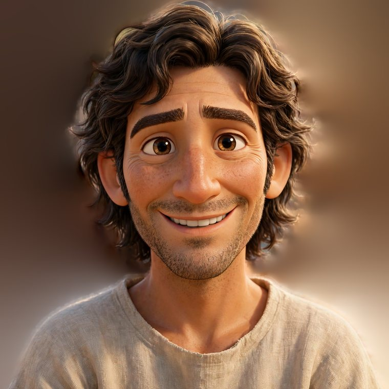
Andrew
Simon’s brother and fishing partner, called in the same hour on the same shore.
His momentAt work beside his brother on the Sea of Galilee when Jesus passed by and called them both.
“…he saw Simon and Andrew, the brother of Simon, casting a net into the sea, for they were fishermen.” Mark 1:16
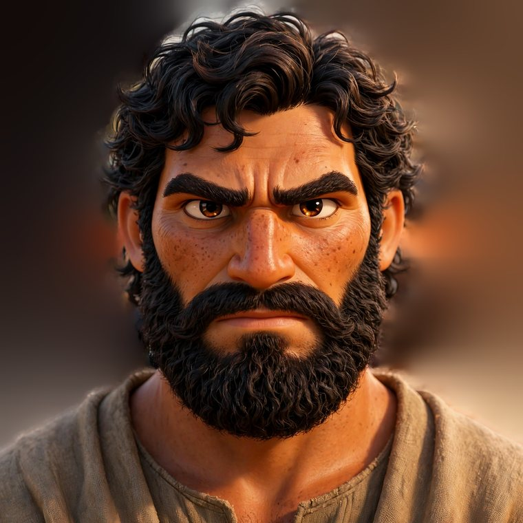
James
Son of Zebedee, a fisherman of the same shore, called with his brother John.
His momentIn the boat with his father, mending the nets, when Jesus called — and he went.
“…he saw James the son of Zebedee, and John his brother, who were also in the boat mending the nets.” Mark 1:19
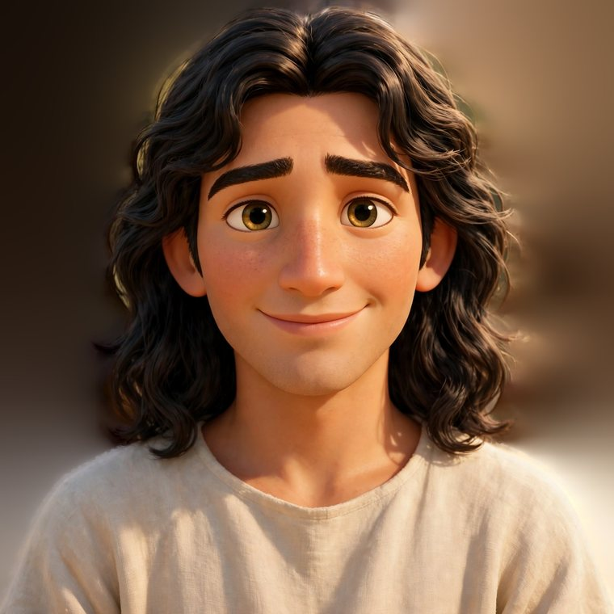
John
James’s younger brother, the other son of Zebedee — among the first to follow.
His momentCalled beside his brother, he left his father in the boat and went after Jesus.
“…they left their father, Zebedee, in the boat with the hired servants, and went after him.” Mark 1:20
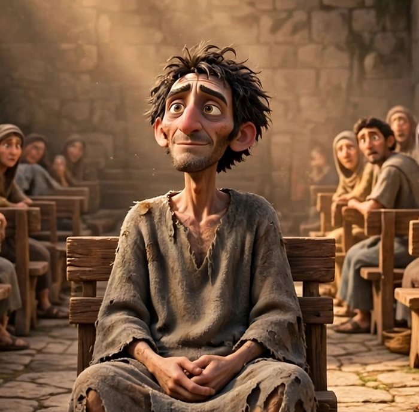
The Man Set Free
A man bound by an unclean spirit, whom Jesus met in the synagogue at Capernaum.
His momentHe cried out among the congregation — and at Jesus’ word the spirit came out of him, and he sat free while everyone marveled.
“Be quiet, and come out of him!” Mark 1:25
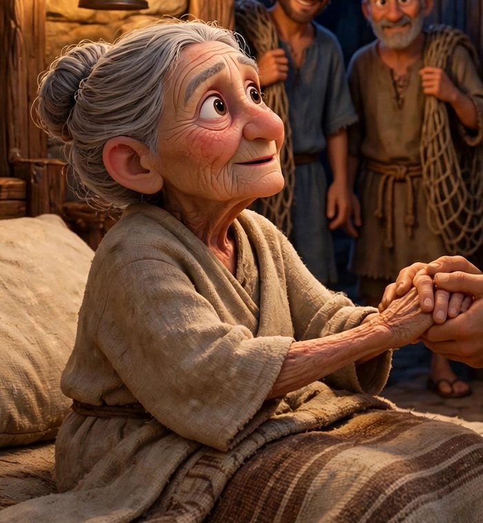
Peter’s Mother-in-Law
Simon’s wife’s mother, lying sick with a fever in the house at Capernaum.
Her momentJesus took her by the hand and raised her up — the fever left her, and she rose and served them.
“He came and took her by the hand and raised her up. The fever left her immediately, and she served them.” Mark 1:31
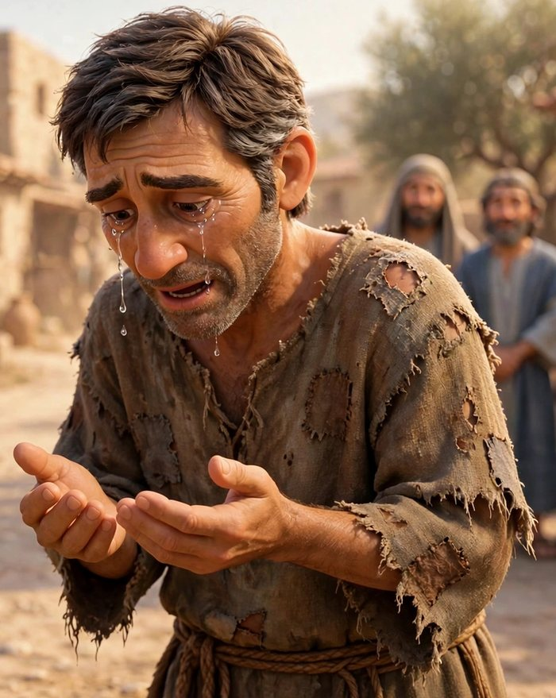
The Healed Leper
A man with leprosy who came to Jesus kneeling, believing he could be made clean.
His momentMoved with compassion, Jesus stretched out his hand and touched him — and immediately the leprosy departed.
“If you want to, you can make me clean.” Mark 1:40
Mark · Chapter 2
In production now — the same cast carries on, and new faces join the company.
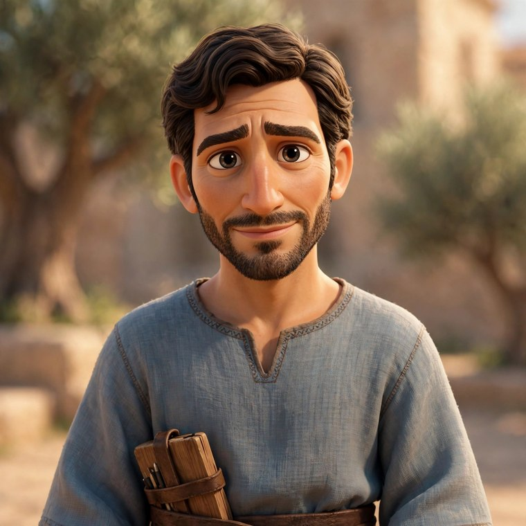
Levi
A tax collector — the Levi the other Gospels call Matthew — seated at the tax office, counted an outsider by his own people.
His momentJesus passed by the tax office and spoke two words to him. Levi got up, left the booth behind, and followed.
“As he passed by, he saw Levi the son of Alphaeus sitting at the tax office. He said to him, ‘Follow me.’ And he arose and followed him.” Mark 2:14
The Film
The first film from this cast is The Gospel of Mark, chapter 1 — the whole chapter, told scene by scene in the places it happened: the Jordan, the wilderness, the Sea of Galilee, the synagogue and the house at Capernaum. Grandpa Teddy narrates the chapter word for word; no character’s lines are invented, and nothing appears on screen that the text does not say.
Where it stands: chapter 1 was released on the TruVINE channel on October 17, 2026 — the company above, in the chapter you can watch now. Chapter 2 is in production, with the same cast carrying on. Nothing from this studio is published until it has been watched, tested against Scripture, and blessed — we would rather hold a film than hurry one. When Mark is finished, the same cast will carry on into John and Genesis.
How We Build
Three steps, in order, every time. Plainly put: the picture obeys the Word — never the other way around.
Step 1
The Sheet
The cast is drawn once and locked. These character sheets are the standard for every film that follows — a face, once crowned, is never re-invented.
Step 2
The Crown
Every scene begins as still pictures, composed against the text of Scripture. Jason reviews and crowns the true ones; only crowned stills may move.
Step 3
The Desk
At the animation desk, crowned stills are layered and given their motion — light breathing, water shimmering, mist passing. No AI video is used at all — every movement is built by hand at the desk, from stills drawn once and locked. The motion stays exactly where we put it.
The Crew Door
Build with us?
This studio is small, and the work is prayed over more than it is hurried. If the Lord puts it on your heart to build with us — grading stills, checking captions, praying over production nights, lending your eyes to a thumbnail — raise your hand with a letter. Tell us who you are and where your heart is in the work.
Letters arrive in Jason’s own inbox and are read by a person. There are no sign-ups, no accounts, and no lists — just a door, and a welcome on the other side of it.